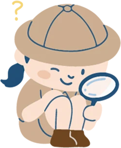
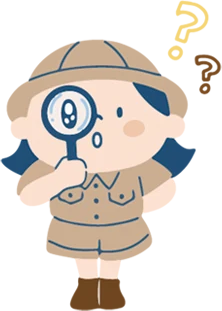

日本語
EN
MENU
TOP
体験
スマホで予約方法を見る
閉じる
もどる
はじめの画面へ
QRでスマホに送る
まもなく はじめの画面にもどります
あと
20
秒で、
つぎの人のために最初の画面にもどります。
このまま見る
はじめの画面へ
閉じる
テーマから選ぶ

Mine秋吉台ってなに？
大地のなりたち
お出かけスポット
見る・歩く

体験
つくる・あそぶ
ジオツアー
ガイドと歩く
表示の設定
言語 / Language
日本語
EN
文字の大きさ
標準
大
スマホで公式サイトを見る
Mine秋吉台ジオパーク推進協議会